Scene invention
Prompt-only generation produced a different church and a different hallway. Even the conditioned edits invented every tree and re-rendered the child's face. Plausible is not faithful.
Generative text removal / textless reconstruct
The textless-art study reached the limit of OCR + LaMa: a 70% mask turned Rock Paper Scissors into a grey hole, and The Whisper Man was only a borderline pass. This study tests the other route — an instruction-driven image editor that reconstructs the artwork underneath the type.
Both modern covers came back text-free with the scene intact. At 160 × 727 spine scale the RPS forest survives. No residual OCR on either result.
It invents detail, leaks instructions, re-renders faces, needs a GPU, and cannot promise that untouched pixels stay untouched. Review is mandatory.
The test
Every case is shown as the same chain the textless-art study used, with a generative result inserted before the spine crop. The crop is the production target: 160 × 727 px, about 22% as wide as the art.
Case 01 · Flatiron US · ISBN 9781250266118
The hard case. Display type covers the middle half of an aerial snow forest; the textless-art study had to mask 70.4% of the cover and LaMa erased the forest with it.
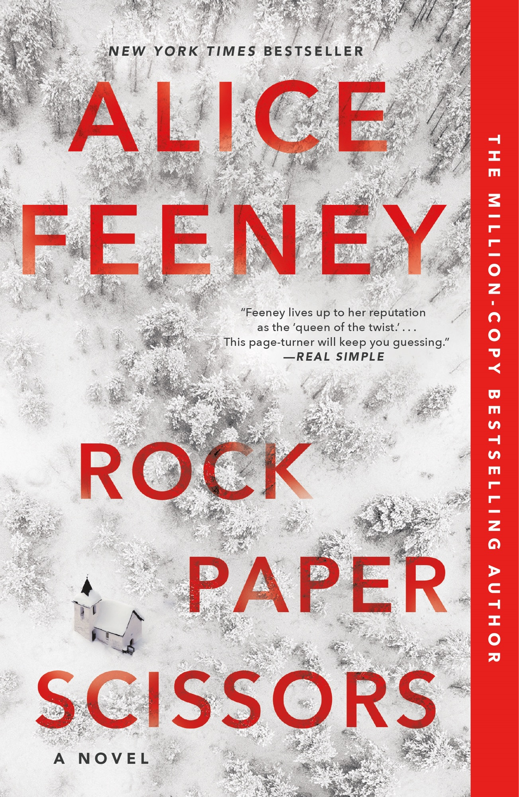
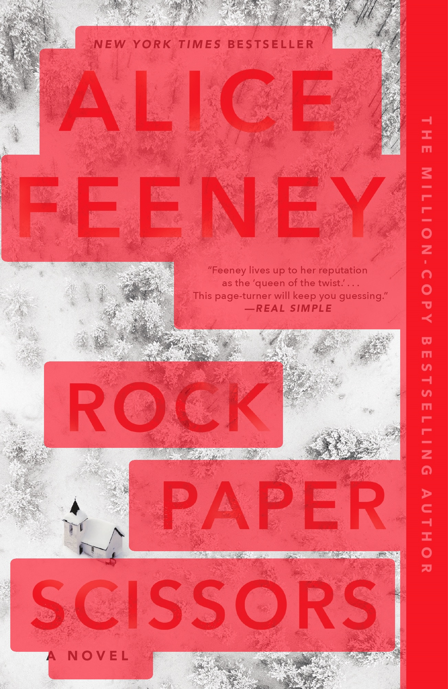
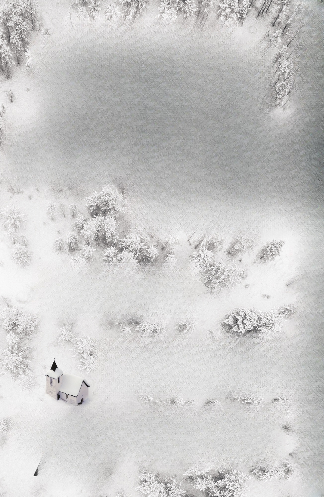
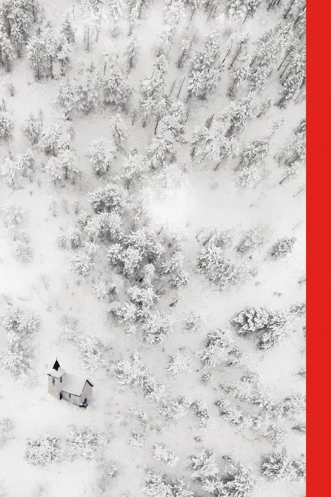
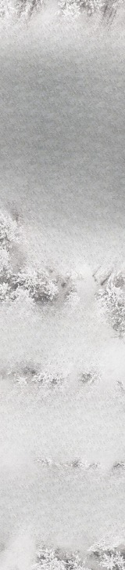
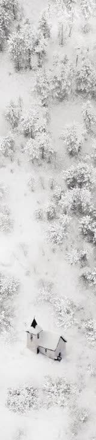
The model rebuilt the forest across the whole title block, then the spine window at 22% width picked up canopy and the church. This is the first RPS spine that reads as a photograph rather than a smudge.
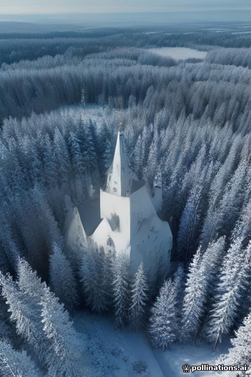
Without the cover as input, the model produced an oblique blue-hour view of a much larger church. It is a handsome winter picture and useless as a cover reconstruction: wrong angle, wrong palette, wrong building, plus a service watermark.
Remove all text, letters, numbers and logos from this book cover. Erase the large red ALICE FEENEY author name, the ROCK PAPER SCISSORS title, the New York Times bestseller line, the review quote, the A NOVEL line, and the red vertical band along the right edge. Reconstruct the snow-covered spruce forest canopy and the small white church that the type covers. Keep the exact same composition, camera angle, framing and lighting. Photorealistic aerial winter photograph. No words, no letters, no logos.
Case 02 · Penguin UK · ISBN 9781405936019
The borderline case. A dark doorway, a child, two black stickers, a penguin colophon, and a gold title block across the bottom fifth. The textless-art study's LaMa pass was acceptable at spine scale; the generative edit is cleaner.
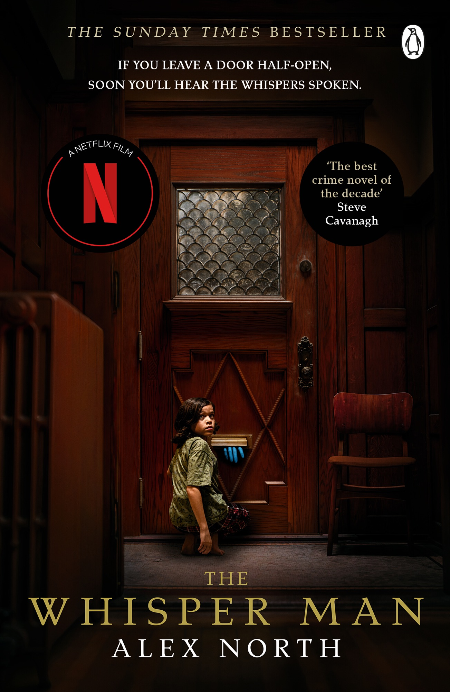
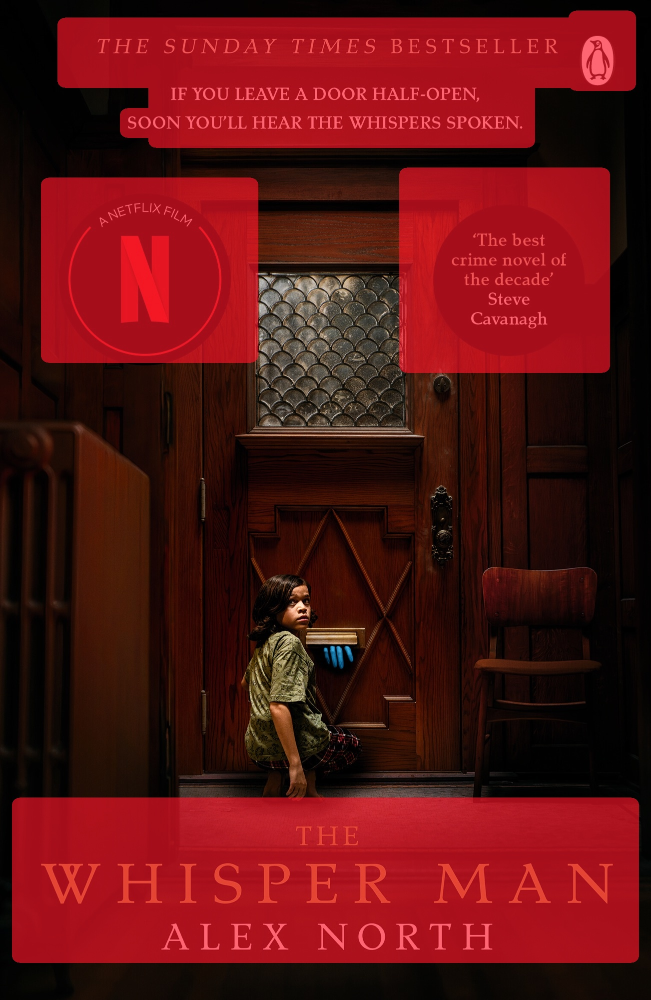
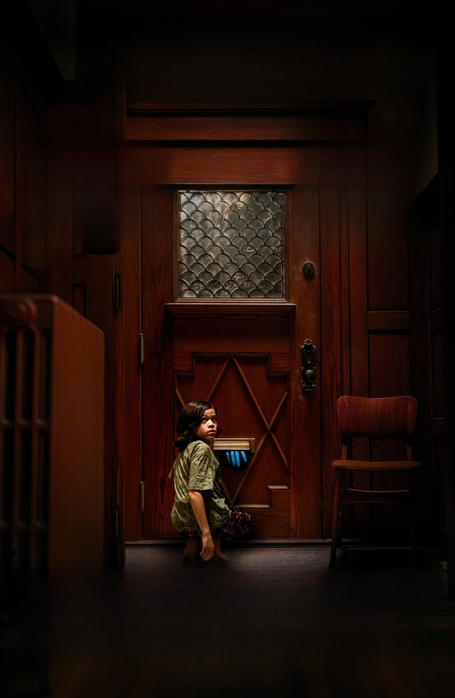
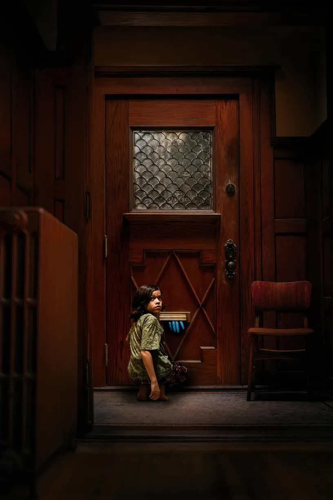

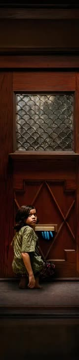
The Netflix badge and quote sticker are gone without the grey haloes LaMa left behind. The bottom title block became floor and door sill. At spine scale this is the best of the three routes.
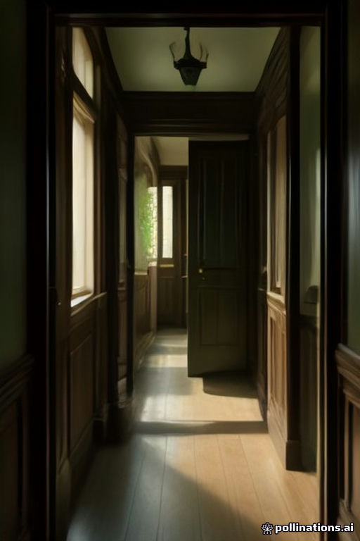
Told only “a dark wood-panelled hallway with a person kneeling by a door”, the model produced a symmetrical, sunlit corridor with nobody in it. Another reminder that prompt-only generation is not reconstruction, however good the picture is.
Remove every piece of printed text, every badge, sticker and logo from this book cover. Erase the top bestseller line, the tagline, the black circular streaming badge on the left, the black circular review-quote sticker on the right, the small bird logo at the top right, and all the gold and white title and author lettering at the bottom. Reconstruct the dark wood panelling, the varnished wooden door, the scalloped frosted-glass window, the chair and the person in the green shirt kneeling on the floor. Keep the exact same composition, camera angle, crop and low-key warm lighting. Photorealistic. No words, no letters, no logos, no badges.
Case 03 · control · public domain
A classic where the genuine textless artwork already exists. This is the line the modern reconstructions cannot cross: the painting is the artist's actual pixels, not a plausible invention.
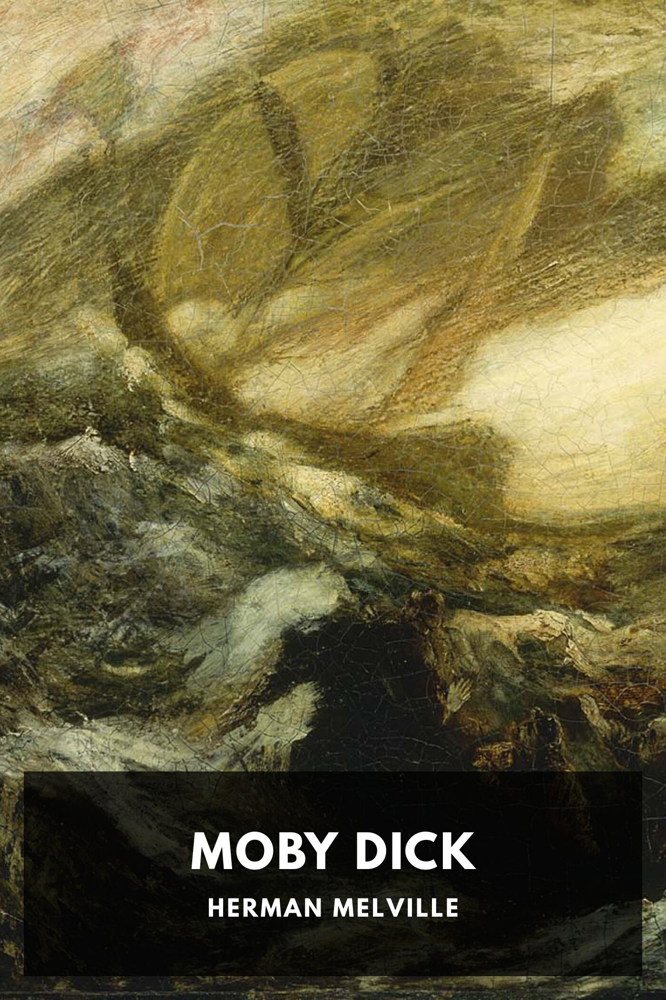
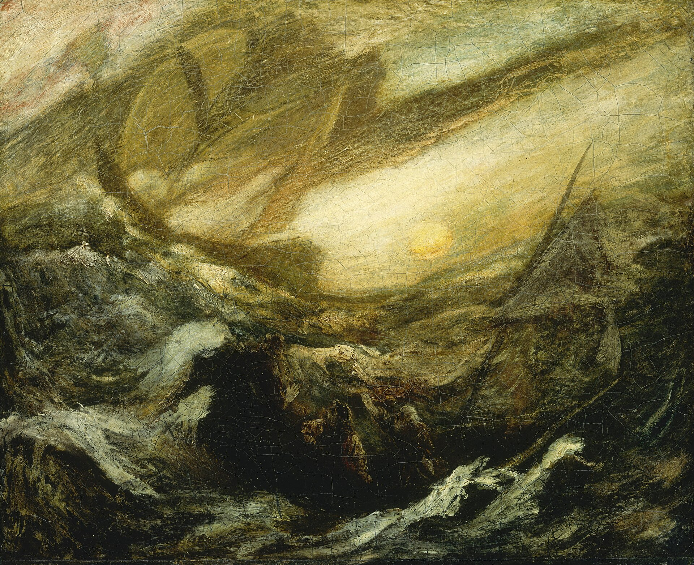
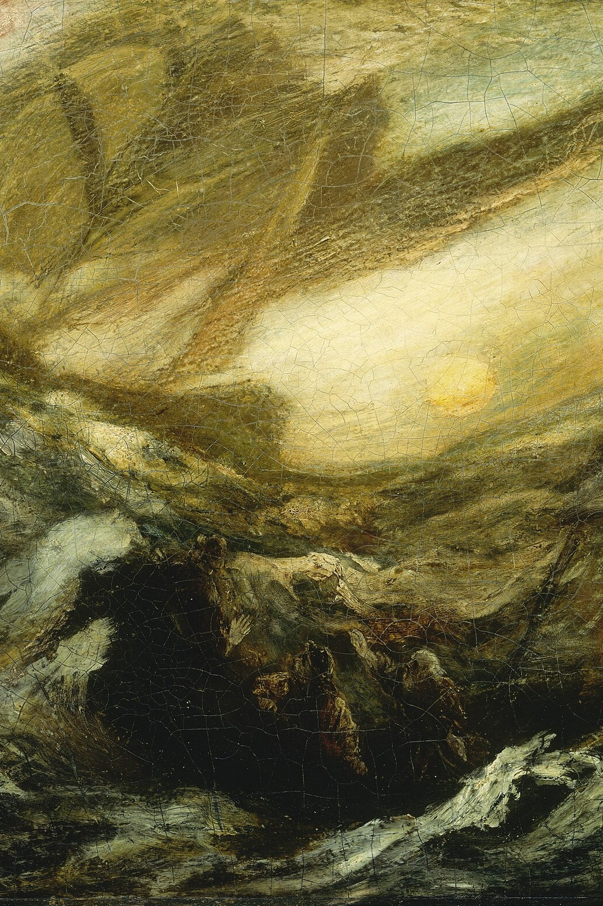
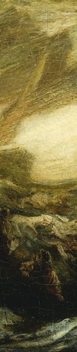
The classic is original: a real painting exists without type, and the crop is a crop. Both modern results are reconstructed: the pixels under the type did not exist in the source and were invented. They read correctly at spine scale, but they are not the same artwork — and the classic is the control that makes that difference visible.
What went wrong
These are not hypothetical. Each one is visible in an asset on this page or is a documented block from the run.
Prompt-only generation produced a different church and a different hallway. Even the conditioned edits invented every tree and re-rendered the child's face. Plausible is not faithful.
The RPS red vertical band survived an explicit “erase the red band” instruction. Long negative lists are requests, not guarantees. It only stopped mattering because the spine window excludes that edge.
Kontext is not mask-conditioned: it reprocesses the whole image. Faces, shirt patterns, door hardware and panel geometry drift. There is no “untouched pixels stay untouched” contract without extra masking.
The Whisper Man prompt was blocked once purely because it contained the word “child”. Rephrasing to “person in the green shirt” passed. An automated pipeline cannot depend on that kind of retry.
The reconstructed RPS canopy is convincing at 160 px but looks like watercolour at 816 px. Generative fill restores structure and colour, not photographic grain or individual branches.
The built-in generate_image route was unusable: OpenAI keys rejected, Token Harbor image balance $0, Grok credential invalid. The usable edits ran on a public FLUX.1 Kontext Space, which then hit its anonymous GPU quota after two images.
Both modern covers are in-copyright. A generative “textless” derivative is still a derivative, made by a third-party model with unclear training provenance. It is not a licence to publish the art.
Seeds, model versions and GPU quotas move. The same prompt can return a different face or a retained badge. A one-off success is not a route.
Method
Recorded so the result can be judged, not just admired. All outputs are local files under generative/.
| Attempt | Model / route | Settings | Outcome |
|---|---|---|---|
| RPS · direct edit | FLUX.1 Kontext Dev, HF Space black-forest-labs/FLUX.1-Kontext-Dev |
28 steps · guidance 2.5 · seed 42 · 816 × 1264 | Usable |
| Whisper · direct edit | FLUX.1 Kontext Dev, HF Space | 28 steps · guidance 2.5 · seed 42 · 816 × 1264 | Usable |
| RPS · prompt only | SANA via Pollinations Classic | 512 × 768 · seed 42 · no image input | Unusable (new scene) |
| Whisper · prompt only | SANA via Pollinations Classic | 512 × 768 · seed 42 · no image input | Unusable (new scene) |
| LaMa repair of RPS | FLUX.1 Kontext Dev, HF Space | 14 steps · guidance 3.0 · seed 7 | Blocked: ZeroGPU quota |
| Built-in generate_image | OpenAI gpt-image-2.6-flare / sunburst | default | Blocked: incorrect API key |
| Built-in generate_image | opencode/grok-imagine-image-2.0 | default | Blocked: invalid credential |
| Token Harbor image API | dall-e-3 / grok-imagine | — | Blocked: balance $0 |
| Dedicated spine outpainting | tall-canvas extend | — | Not run: quota exhausted |
OCR audit: RapidOCR found 0 text boxes on both Kontext results; it found only the pollinations.ai watermark on the two prompt-only images. That proves the type is no longer machine-readable, not that the art is original.
The title-band reconstruction doubles as the uncrop test: in both covers the model continued the scene into the band the type occupied. A separate tall-canvas outpaint was planned but not run once the anonymous GPU quota was exhausted.
Verdict
A conditioned generative edit is a real step change over LaMa for large typography. It is the only route tested here that makes the Rock Paper Scissors spine usable, and it cleans up the Whisper Man stickers better than the textless-art inpaint. Treat it as an offline art-restoration step with a human check, not as a batch job.
Three conditions keep it honest: keep the LaMa/original comparison visible, judge at the spine window rather than at poster size, and never call the result “the original artwork”. If a licensed textless asset exists, use it. If not, a typographic spine is still more truthful than an invented forest.
Generative fill can reconstruct the picture.
It cannot reconstruct the provenance.
Sources & licence
Modern covers. The Whisper Man (Penguin UK, ISBN 9781405936019) and Rock Paper Scissors (Flatiron US, ISBN 9781250266118), both 1303 × 2000, from the Apple Books / iTunes Search API via the textless-art study. They are in copyright and used only as design references in this throwaway prototype; the textless derivatives inherit the same rights. No production use is implied.
Classic control. Moby-Dick uses the Standard Ebooks cover (public domain) and Albert Pinkham Ryder's The Flying Dutchman (1887), public domain, downloaded from Wikimedia Commons for the textless-art study. The 2:3 art crop and 160 × 727 spine crop are deterministic crops — no model.
Baseline. Textless-art masks and LaMa results: RapidOCR + manual polygons + LaMa big-lama on CPU. Mask fractions, OCR boxes and inpaint times come from textless-art masks.
Fonts. EB Garamond, SIL Open Font License; the OFL text is included in this folder. The page has no external requests: every image, font and script is local.
Generated files. generative/rps-a-kontext.jpg, whisper-a-kontext.jpg (usable edits); rps-c-promptonly.jpg, whisper-c-promptonly.jpg (prompt-only failures); *-a-art.jpg, *-a-spine.jpg (crops); ocr-audit.json.